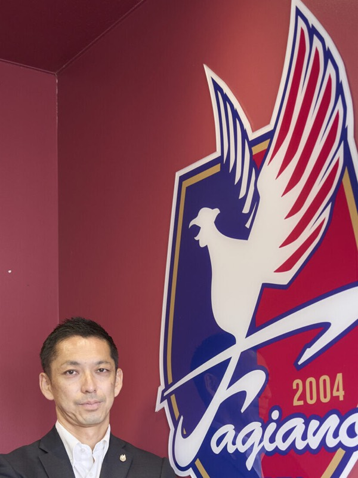
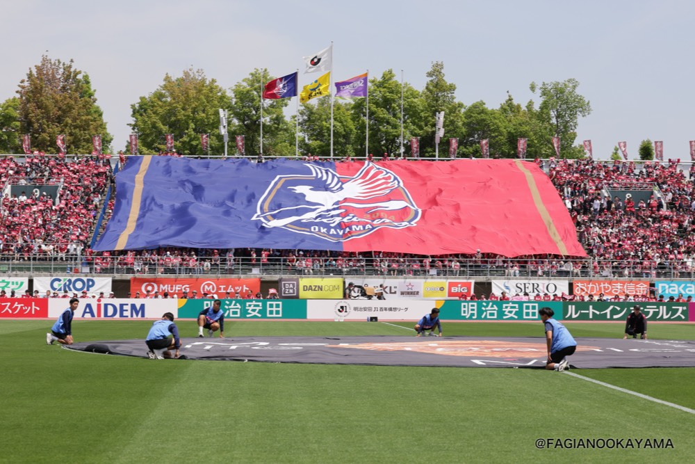
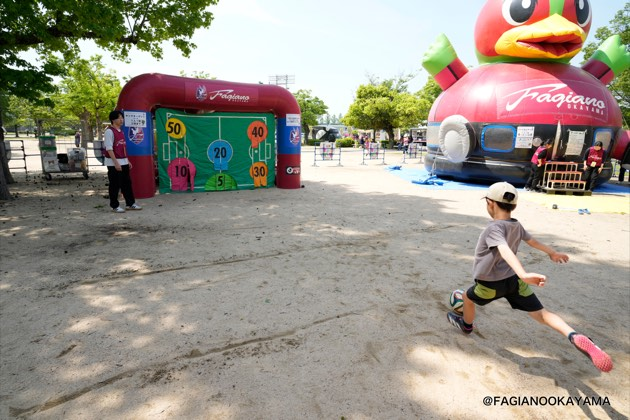
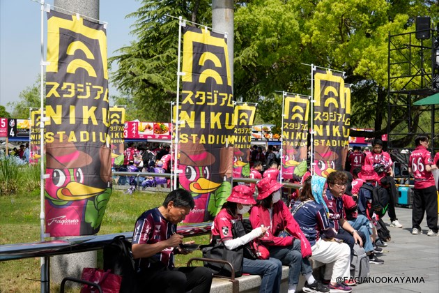
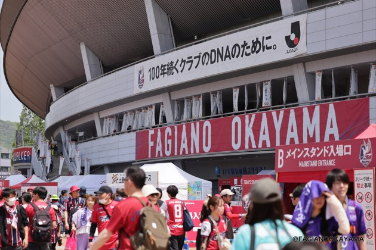
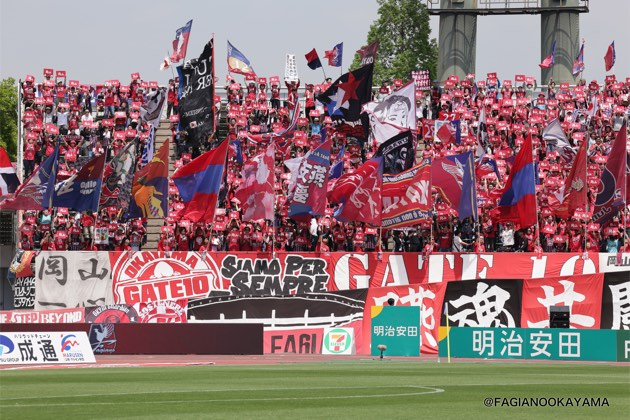
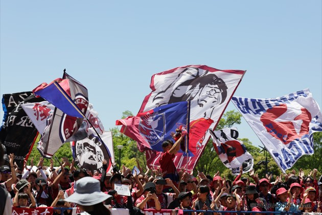
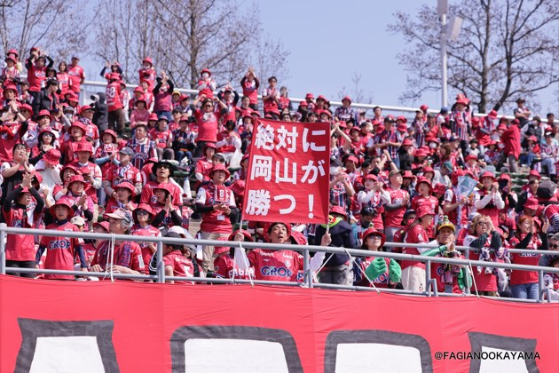

岡山に夢を!ファジアーノの挑戦
森井 悠yu morii
株式会社ファジアーノ岡山スポーツクラブ 代表取締役社長
富山県生まれ、千葉県育ち。筑波大学大学院でサッカーのコーチングを専門的に学んだ後、人材系企業へ就職。2010年、知人の誘いを機に株式会社ファジアーノ岡山スポーツクラブに入社。法人営業、広報・イベント部長、地域コミュニケーション推進部長などを歴任し、クラブ事業の根幹と地域密着活動を幅広く牽引。 執行役員事業本部長、副社長を経て、2024年に41歳で第3代代表取締役社長に就任。「子どもたちに夢を!」を掲げ、クラブ運営に尽力する。
企業サイトを見るCHAPTER 01
クラブの理念と原点

Qまず初めに、ファジアーノ岡山というクラブの組織としての立ち位置や、活動の根幹となる理念について教えてください。
A一言でいえば、私たちは「子どもたちに夢を!」というクラブ理念を体現していく組織です。サッカーをはじめとして、広くスポーツを通じて、この理念を具体的な形にしていくことがファジアーノ岡山という組織の最大の使命だと心得ています。チームの競技活動を、会社としての事業活動に有機的に連携させながら、地域一丸となって目標に取り組んでいく、そんな組織です。
Q「子どもたちに夢を!」という理念が生まれた背景にはどのようなストーリーや原体験があるのでしょうか?
A岡山県にはプロスポーツチームがほとんど存在していませんでした。クラブの創業者である木村正明の幼少期のエピソードがこの理念を形作る原点となっています。少年時代の木村が野球に打ち込む中、広島に遠征に行った際に抱いた一つの劣等感がその原体験となっています。対戦した広島の野球チームに勝利を収めて喜ぶ中、負けた広島の子どもたちが「これからカープの試合じゃ」と自転車に乗って球場に向かう姿を目の当たりにし、広島に住む人々にとってプロ野球の試合が日常にあることにとても衝撃を受けたそうです。
大人になり外資系金融の第一線で活躍する中で同期は外国籍の方ばかり。集まって話すのは故郷のことで、その中でも地元のスポーツチームがよく話題に上がったと聞きます。「自分が生まれ育ったこの地域にプロスポーツチームがなくても本当にいいのだろうか」と自らに強く問いかけたことがファジアーノ岡山を立ち上げる強い動機となりました。
私たちのクラブが全国の舞台で活躍することで、日本中の方々に岡山という地域を知っていただく。そして、厚かましいかもしれませんが、地域の皆様がファジアーノ岡山を自分たちの街の誇りに思い、岡山という街をもっと好きになるきっかけを作りたい。それこそが、私たちが一番実現したい根源的な願いです。
CHAPTER 02
地域と共に歩むスタジアムづくり
Qプロスポーツチームとして、サッカーにそれほど詳しくない地域の方々にスタジアムへ足を運んでもらうために、どのような工夫をされていますか?
A私が入社した2010年は、クラブがJ2リーグでの2年目を迎えた年ですが、法人営業として配属される中で強く指導を受けたのは、とにかくサッカーの話をしないことでした。当時岡山ではまだまだサッカーに興味のない方がほとんどの中、「サッカーを観に来てください」とひたすらアピールしても、まったく響きません。とにかく自分自身を通じてクラブを信頼してもらうことに努めました。加えて私たちはホームゲームを、サッカーの試合以外の時間や空間でも存分に楽しんでいただける環境づくりに注力してまいりました。
代表的な取り組みの一つが「ファジフーズ」です。スタジアムで温かくて美味しい食事を、お求めやすい価格で提供したいという思いから、地元の多くの飲食店舗様にご協力をいただき、毎年少しずつ改善しながら展開し、いまではJ1でも屈指の飲食ブースとして全国のJリーグファンの皆さまから評価されています。さらに、小さなお子様連れのご家族にも安心して楽しんでいただけるよう「キッズパーク」も用意しました。スタジアムの外で楽しく遊べる場所があれば、90分間の試合以外にも家族みんなでスタジアムでの一日を心ゆくまで楽しんでいただけると考えたのです。
Qサッカーという枠を超えた、地域密着型のエンターテインメントやイベントも数多く開催されているとお聞きしました。
A私たちはスタジアムを単なる競技場としてではなく地域の皆様が集い笑顔になれる一つの「テーマパーク」のような場所にしたいと本気で考えて取り組んでまいりました。例えば有名なお笑い芸人の方をお招きしてライブイベントを行ったり、地元の高校生たちにチアダンスなどのパフォーマンスを大観衆の前で披露してもらったりと、様々なエンターテインメント要素を積極的に取り入れてきました。
きっかけは何でもよく、「今日は美味しいファジフーズを食べに行こう」「週末のイベントを楽しみにスタジアムへ行こう」と思っていただけるよう、そしてその先に「地元のプロスポーツチームを応援したい」という気持ちが必ず沸き起こり、そういう存在が岡山の皆さまの日常を彩ると信じ、活動を続けてまいりました。







CHAPTER 03
異業種からの挑戦と未来への展望
Qご自身はどのような経緯でファジアーノ岡山に入社されたのでしょうか?異業種からの転身だったと伺っています。
A私は千葉県で育ち、サッカーは下手ながら高校まで楽しく打ち込んでいました。その後何を思ったか、サッカーのコーチングについて学ぼうと筑波大学の大学院に進学しました。そこで色々な経験をし、様々な方と出会う中で、自分自身がその道に行くことへの覚悟がないと感じ、人材系の一般企業に就職する道を選びました。
ファジアーノ岡山への入社のきっかけは、当時の大学院の同級生がファジアーノ岡山のコーチをしており、彼との他愛もない電話でした。「うちのクラブ、面白いから応募してみたら?」と誘われたのが直接のきっかけです。正直なところ、まだJリーグに上がって1年目のクラブで、ファジアーノ岡山のことを良く知りませんでしたが。ただ、創業者である木村や当時の経営陣の並々ならぬ熱い想いを知るにつれ、ここで働きたいを強く思い、入社に至りました。ビジネスパーソンとしてどころか社会人として未熟で、最初は怒られてばかり。「いつクビになるか」とヒヤヒヤしながら必死に食らいつく毎日でした。
Q入社後は様々な部署でご活躍され、現在に至るわけですが今後のクラブとしての目標や展望をお聞かせください。
A入社からの約7年間は、ずっと法人営業を担当していました。私は決して営業が得意なタイプではありませんでしたが、木村から直接厳しい指導を受けながら、成果を上げられるよう一つ一つ取り組んでまいりました。その現場での経験が、今の私の経営者としての大きな土台になっています。
今後のクラブの展望として、引き続き最も大切なのは「1試合1試合を真摯に全力で戦い抜くこと」に尽きます。その結果を生み出すのは、日々の1日1日のトレーニングの積み重ねでしかありません。そして、私たちが長年培ってきたプレースタイルや戦い方をさらに明確に言語化し、誰が見てもファジアーノ岡山だと分かるブレないチーム作りを進めていきます。また、これからは海外との接続など新しい領域にも積極的にアプローチし、この岡山から世界へ羽ばたく魅力的なクラブへと飛躍させていきたいと考えています。